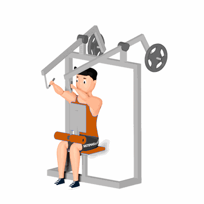

Remada Alta Hammer

O exercício irá trabalhar o fortalecimento das costas, auxiliando também na melhora da postura.
Ficha Técnica
Tipo: Musculação
Grupo Muscular: Costas
Aparelho: Nenhum
Músculos: Nenhum
Como realizar
- Sente-se no aparelho com os pés fixos;
- Ajuste o apoio do peito de forma que seu braço fique estendido;
- Mantenha a coluna reta e a cabeça para frente;
- Segure as manoplas e puxe ao mesmo tempo em que contrai os músculos das costas;
- Une as escápulas ao final do movimento e deixe o abdome contraído o tempo todo para estabilizar a coluna;
- Retorne os braços à posição inicial em um movimento contínuo, até que os cotovelos fiquem quase estendidos;
- Repita os movimentos pela quantidade de vezes determinada pelo professor(a).
 RC STORE
RC STORE